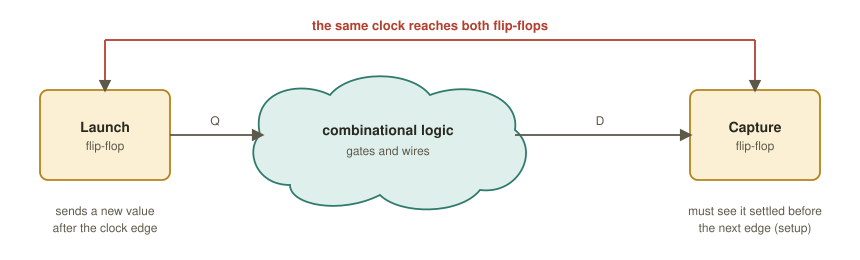
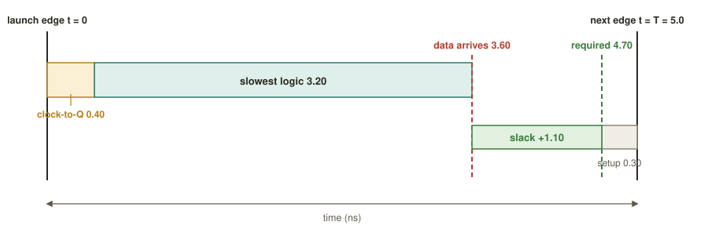
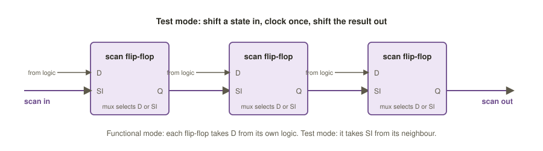

Chapter 2: Logic Synthesis and Timing Basics¶
Synthesis is the first stage at which an abstract piece of Verilog stops being an idea and starts becoming hardware. The tool reads the RTL, works out the Boolean logic and the registers that it describes, and maps that logic onto real building blocks, the standard cells of one manufacturing process, while squeezing timing, area and power to meet the constraints it has been given. The output is a gate-level netlist: the same design, now written entirely in NANDs, AOIs, flip-flops and buffers that a foundry can actually make.
Synthesis is also where timing first matters. A gate-level netlist is useful only if its gates are fast enough, so this chapter introduces, alongside the tool flow, the arithmetic of setup and hold slack that the rest of the book builds on.
Learning outcomes
After this chapter you can:
- Describe the three phases of synthesis and read a small gate-level netlist.
- Explain timing arcs and drive strengths in a cell library.
- Compute setup and hold slack for a register-to-register path, and find the critical path and the maximum clock frequency.
- Write basic SDC constraints and read a Yosys synthesis script.
- Explain scan chains and say what synthesis does and does not prove.
2.1 What synthesis does¶
RTL describes behaviour: "on the rising clock edge, sum becomes a + b". Logic synthesis turns that behaviour into a structural netlist, an interconnection of standard cells, that is logically equivalent to the RTL but can be built in silicon. Three conceptual phases happen inside the tool.
Elaboration. The RTL is parsed, parameters are resolved, generate loops are unrolled and the hierarchy is built. Behavioural constructs (+, *, if, case, always blocks) become a generic, technology-independent netlist of abstract gates and inferred registers. This representation is often called GTECH or, in Yosys, RTLIL. No real cell has been chosen yet.
Technology mapping. Each generic gate and register is replaced by a real cell from the target .lib: a sky130_fd_sc_hd__nand2_1, a __dfrtp_2 flip-flop and so on. This is where an abstract AND becomes "this exact NAND followed by this inverter, with these delays".
Optimisation. The tool restructures the logic, resizes cells, inserts buffers and shares common sub-expressions until timing is met with as little area and power as possible. Optimisation is interleaved with mapping; modern engines such as ABC map and optimise together.
Before and after¶
Consider a registered 4-bit adder.
module add_reg (input clk, input [3:0] a, b, output reg [4:0] sum);
always @(posedge clk)
sum <= a + b; // 4-bit + 4-bit -> 5-bit, registered
endmodule
After synthesis the + is gone. In its place are XOR, AND and AOI-style cells forming the carry logic, and each bit of sum has a D flip-flop. The fragment below is a schematic of that result, simplified and with the carry chain elided, to show its character; a real run produces a longer netlist with different cell choices.
module add_reg (clk, a, b, sum);
input clk; input [3:0] a, b; output [4:0] sum;
wire n1, n2, n3, c0, c1, c2, c3;
// the lowest bit of the adder, mapped to real cells
sky130_fd_sc_hd__xor2_1 U1 (.A(a[0]), .B(b[0]), .X(n1));
sky130_fd_sc_hd__and2_1 U2 (.A(a[0]), .B(b[0]), .X(c0));
sky130_fd_sc_hd__o21ai_1 U3 (.A1(a[1]), .A2(b[1]), .B1(c0), .Y(n2));
// ... the carry chain continues for bits 1 to 3 ...
// registers: one D flip-flop per sum bit
sky130_fd_sc_hd__dfrtp_1 Q0 (.CLK(clk), .D(n1), .Q(sum[0]));
sky130_fd_sc_hd__dfrtp_1 Q1 (.CLK(clk), .D(n2), .Q(sum[1]));
// ... Q2, Q3, Q4 ...
endmodule
Notice what changed. The arithmetic operator vanished, replaced by explicit cells; the reg became five concrete dfrtp (rising-edge D flip-flop with reset) cells; and every wire is now a named net that will become a physical wire.
The lowest bit of a + b is a half adder: the sum bit is a XOR b and the carry is a AND b. Each of those two gates is one standard cell, xor2_1 and and2_1.
Definition: standard cell
A standard cell is a pre-designed, pre-characterised, fixed-height logic primitive (inverter, NAND, AOI, flip-flop, buffer) that the foundry guarantees it can manufacture. Synthesis's whole job is to express the design using only cells from the chosen library.
2.2 Inputs and outputs¶
Synthesis is a function of three inputs and produces one primary output together with some reports.
| Role | File | What it provides |
|---|---|---|
| Input: design | RTL .v, .sv, .vhd |
the behaviour: modules, always blocks, arithmetic |
| Input: library | .lib (Liberty) |
the cells available, with timing, power and area characterised for the process |
| Input: constraints | .sdc |
clock period, input and output delays, false paths: the goals the netlist must meet |
| Output: netlist | gate-level .v |
structural Verilog instantiating library cells and nets |
| Output: reports | timing, area and power logs | worst slack, cell count, total area, estimated power |
Table 2.1 What synthesis reads and writes.
2.3 Inside the cell library¶
The .lib file is the tool's model of reality. For every cell it stores the logic function, the area, the power and, above all for synthesis, the timing arcs.
A timing arc is a measured delay from one input pin to one output pin of a cell, for example from A to Y of a NAND2. The delay is not a single number. It depends on two things, and the library stores it as a two-dimensional look-up table (a non-linear delay model, NLDM):
- How fast the input changes. A slowly rising input, one with a large slew, makes the cell respond later.
- How much the cell has to drive. Every input that the output feeds adds capacitance, and more load means a slower output.
(An analogy: how long it takes to fill buckets depends on how quickly the tap opens and how many buckets are waiting.)
For flip-flops the library also stores setup and hold constraint arcs: the data must be stable before the clock edge (setup) and for a while after it (hold). Violating either corrupts the captured value. The input capacitance of each pin is the load that the pin presents to whatever drives it, so a net's fan-out slows its driver by the sum of the pins it feeds.
Drive strength¶
The same logic function is offered in several strengths. The suffix _1, _2, _4 (or X1, X2, X4) denotes the size of the transistors.
| Cell | Drive | Delay into a big load | Area | Load it puts on its driver |
|---|---|---|---|---|
nand2_1 |
×1 | slow | small | small |
nand2_2 |
×2 | faster | bigger | bigger |
nand2_4 |
×4 | fastest | biggest | biggest |
Table 2.2 Drive strength trades speed against area, power and input load.
Cell selection and sizing is a core synthesis decision. A lightly loaded net gets a ×1 cell; a net that feeds many gates or a long wire gets a ×2 or ×4 cell or a buffer chain. Up-sizing cuts delay but costs area and power.
Think about it
If ×4 is always faster, why not make every cell ×4?
Answer
A bigger cell has bigger inputs, which slow down whatever drives it, and it leaks more power. Up-sizing one gate therefore slows the gate before it, and doing it everywhere burns leakage everywhere. Sizing is a balance, not a maximisation.
2.4 Timing basics¶
Synthesis optimises for speed, so we first need to say exactly what "fast enough" means.
A path from one flip-flop to the next¶
A synchronous design is made of registers separated by clouds of combinational logic. Figure 2.1 shows one such path. On a clock edge the launch flip-flop sends out a new value. The value must cross the logic and settle at the capture flip-flop before the next edge, but it must not disturb what the capture flip-flop is taking in on the current edge.

Three numbers from every flip-flop¶
- Clock-to-Q (\(t_{cq}\)): after the clock edge, how long until the new value appears at output Q.
- Setup time (\(t_{su}\)): how long the input must be steady before the clock edge to be captured reliably.
- Hold time (\(t_{h}\)): how long the input must stay steady after the clock edge.
(A photographer's flash is a good picture: you must be in position a moment before it fires, which is setup, and keep still a moment after, which is hold, or the picture blurs.)
The setup check: is it too slow?¶
Data launched at the clock edge arrives at the capture flip-flop after clock-to-Q plus the delay of the slowest route through the logic. It is required there by the next edge, one clock period \(T\) later, less the setup time. The difference is the slack:
Positive slack means time to spare; negative slack is a violation, and the chip fails at this clock rate. Figure 2.2 shows the numbers of the next example on a time line.
Example 2.1: Setup slack at two clock periods
A path has \(t_{cq} = 0.40\) ns, slowest logic \(3.20\) ns and \(t_{su} = 0.30\) ns.
- At \(T = 5.0\) ns: the data arrives at \(0.40 + 3.20 = 3.60\) ns. It is required by \(5.0 - 0.30 = 4.70\) ns. Slack \(= 4.70 - 3.60 = +1.10\) ns. The check is met, with 1.1 ns to spare.
- At \(T = 3.5\) ns: the requirement is \(3.5 - 0.30 = 3.20\) ns, so slack \(= 3.20 - 3.60 = -0.40\) ns. The check fails: the clock has outrun the logic.

The hold check: is it too fast?¶
The same clock edge that launches a new value also captures the old one at the downstream flip-flop. If the new value races through a very short path it can arrive while the capture flip-flop is still holding on to the old one. So hold uses the fastest route through the logic:
The clock period \(T\) does not appear in this formula. Slowing the clock therefore does not fix a hold problem.
Example 2.2: Hold slack
With \(t_{cq} = 0.40\), fastest logic \(0.30\) and \(t_h = 0.15\) ns:
The check is met. Now connect the two flip-flops almost directly, with a fast flip-flop having \(t_{cq} = 0.10\) ns and no logic at all:
The check fails. This is the classic hold-critical topology: a flip-flop feeding another flip-flop with nothing in between.
The critical path and the maximum clock¶
A design has thousands or millions of such paths. The one with the least slack is the critical path. It alone fixes the fastest possible clock:
For the numbers of Example 2.1, \(f_{max} = 1 / (0.40 + 3.20 + 0.30\ \text{ns}) = 1 / 3.9\ \text{ns} \approx 256\) MHz. Synthesis spends its effort here: restructuring and up-sizing cells on the critical path, and saving area and power everywhere else.
Experiment: break setup, then hold
In the course's interactive calculator you could shrink \(T\) until setup fails, and then shrink the fastest logic towards zero and watch hold fail while noting that changing \(T\) does nothing for it. You can do the same on paper with Examples 2.1 and 2.2: re-evaluate setup for \(T = 4.0, 3.9, 3.8\) ns and hold for fastest-logic delays of \(0.30, 0.20, 0.10, 0\) ns.
2.5 Constraints: telling the tool the goal¶
Without a clock period, "make it fast" means nothing: the tool has no idea how fast the clock runs or when signals arrive. SDC (Synopsys Design Constraints) is a dialect of Tcl, understood by every tool in the flow, that says it. Synthesis, layout and timing analysis all read the same file.
# --- the clock: 10 ns period = 100 MHz, 50 % duty ---
create_clock -name clk -period 10.0 [get_ports clk]
# --- inputs arrive 2 ns after the edge; outputs are needed 3 ns before the next one ---
set_input_delay -clock clk 2.0 [all_inputs]
set_output_delay -clock clk 3.0 [all_outputs]
# --- a hard cap on one path, independent of any clock ---
set_max_delay 4.0 -from [get_pins U1/A] -to [get_pins U9/Y]
# --- a configuration pin that never changes in operation: do not time it ---
set_false_path -from [get_ports test_mode]
# --- a slow multiplier is allowed two cycles ---
set_multicycle_path 2 -setup -from [get_pins mul/*] -to [get_pins acc_reg/D]
set_multicycle_path 1 -hold -from [get_pins mul/*] -to [get_pins acc_reg/D]
# --- the world outside: what drives our inputs, what our outputs drive ---
set_driving_cell -lib_cell sky130_fd_sc_hd__inv_2 [all_inputs]
set_load 0.05 [all_outputs] ;# 50 fF on each output
| Command | What it does |
|---|---|
create_clock |
defines a clock's period (hence frequency), waveform and source port; the metronome every setup and hold check is measured against |
set_input_delay |
models how late data arrives at an input, relative to the clock: how much of the period is already used before the signal reaches the block |
set_output_delay |
models how early an output must be valid so the next block can capture it: how much of the period the next block needs after ours |
set_max_delay |
an explicit upper bound on one path's delay, independent of any clock; useful for combinational or asynchronous interfaces |
set_false_path |
marks a path that exists in the wiring but is never exercised (for example a static configuration pin); the tool stops optimising and reporting it |
set_multicycle_path |
relaxes a path that legitimately takes more than one clock cycle to settle, so that it is not flagged as a violation |
set_driving_cell, set_load |
model the real neighbours, so delays at the edges of the block are realistic rather than ideal |
Table 2.3 The essential SDC commands.
Constraints are part of the design
A false path that you declare wrongly is never checked, and can fail on silicon. Constraints must be reviewed with the same care as code.
2.6 Optimisation: moving along the PPA curve¶
Synthesis is a constrained optimisation over the three axes of PPA (Section 1.6). The constraints pin down "meet 100 MHz", and the tool then minimises area and power subject to that. Its main levers are:
- Restructuring: re-factoring the Boolean network, for instance turning a deep chain of gates into a balanced tree, to cut logic depth on the critical path.
- Sizing: swapping a cell for a stronger (×4) or weaker (×1) variant, trading delay against area and power. Cells with spare slack are down-sized.
- Buffering and cloning: inserting buffers on long or high-fan-out nets, or duplicating a driver, so that a single overloaded cell does not dominate a path.
- Multi-threshold libraries: when a library offers cells of several threshold voltages, low-leakage (high-threshold) cells can be used off the critical path and fast (low-threshold) cells only where they are needed.
Example 2.3: The same adder at opposite ends of the curve
A 32-bit adder built as a ripple-carry chain has about 32 gate delays and a tiny area. It is too slow for a 500 MHz clock. A carry-lookahead (prefix) adder has about 6 gate delays and meets timing, but costs roughly twice the area and more power. The function is identical; the constraints decide which structure the tool builds.
Tighten the clock of a block from 10 ns to 8 ns and re-synthesise. Timing now passes, but the area report may jump by 20 % and power rises too. Nothing about the function changed: the tool up-sized cells, added buffers and restructured logic to buy 2 ns, and paid for it in silicon and switching energy. You moved along the PPA curve; nothing came free.
2.7 A synthesis script in Yosys¶
Yosys is the open-source synthesis engine at the heart of OpenLANE. A minimal, explicit script (what the one-line synth macro expands to, in outline) shows each step.
# run with: yosys -s synth.ys
read_verilog add_reg.v # 1. parse the RTL into RTLIL
hierarchy -check -top add_reg # 2. choose the top module, elaborate the hierarchy
proc # 3. always blocks, if and case -> logic + flip-flops
opt # 4. constant-fold, remove dead logic, simplify
fsm; opt # (optional) extract and optimise state machines
memory; opt # (optional) map memories to logic or block RAM
techmap; opt # 5. map generic operators to gate-level primitives
dfflibmap -liberty sky130_fd_sc_hd.lib # 6. map generic flip-flops to library flip-flops
abc -liberty sky130_fd_sc_hd.lib # 7. map and optimise combinational logic to cells
clean # drop unused wires and cells
write_verilog -noattr add_reg_netlist.v # 8. write the gate-level netlist
| Command | Role in the flow |
|---|---|
read_verilog |
parses the RTL into Yosys's internal representation, RTLIL |
hierarchy -top |
names the top module and elaborates the module tree; -check reports missing modules |
proc |
converts behavioural always blocks (if, case, assignments) into multiplexer logic and inferred flip-flops |
opt |
generic clean-up: constant propagation, dead-code removal, trivial simplification; run repeatedly between other passes |
techmap |
maps coarse operators (adders, muxes, shifts) down to a generic gate-level library |
dfflibmap |
maps the generic flip-flops onto real sequential cells of the given .lib, matching their set, reset and enable flavours |
abc -liberty |
hands the combinational logic to ABC, which maps and optimises it for timing and area against the Liberty cells |
write_verilog |
writes the structural netlist; -noattr strips internal attributes for a clean file |
Table 2.4 The steps of a minimal Yosys script.
Think about it
Why are dfflibmap (sequential) and abc (combinational) separate steps?
Answer
Flip-flops must map to specific library cells with matching reset and enable pins, which ABC's combinational optimiser does not reason about. Yosys therefore pins the flip-flops down first, and then lets ABC reshape freely only the cloud of logic between them.
2.8 Making chips testable: scan¶
Factories make defects. Every manufactured chip must be tested, but a register buried deep inside the design cannot be reached from the pins. Design for test (DFT) makes the netlist controllable and observable, and its workhorse is scan.
- Scan flip-flops. Each ordinary D flip-flop is replaced by a scan flip-flop with an extra multiplexer on its D input. In functional mode it behaves normally; in scan mode it takes its data from the previous flip-flop's output.
- Scan chains. The scan flip-flops are linked into long shift registers (Figure 2.3). In test mode the tester shifts in any state it likes, runs one functional clock, and shifts the result out.
- ATPG (automatic test-pattern generation) computes the input vectors that expose defects, typically under the stuck-at fault model in which each node is stuck at 0 or at 1.
- Fault coverage is the fraction of modelled faults that the patterns detect. Production chips aim well above 95 to 99 %; a low figure lets defective parts reach customers.

Scan insertion happens during or after synthesis. The extra multiplexer costs a little area and a little timing, which is why DFT is budgeted into the flow from the start and not bolted on later.
2.9 What synthesis does not prove¶
Common misconception
"Synthesis ran without errors, so my design is correct." Synthesis only guarantees that the netlist does the same as the RTL you gave it, bugs included. If the RTL is wrong, the gates will be faithfully and efficiently wrong.
Three different activities must not be confused. Verification (simulation, formal proofs) checks that the RTL does what you intended. Equivalence checking (LEC) proves that the netlist still matches the RTL after optimisation. Synthesis is neither of these.
Summary¶
- Synthesis elaborates the RTL, maps it onto real library cells and optimises for PPA: RTL plus
.libplus.sdcgives a gate-level netlist. - The
.libgives timing arcs (tables of delay against input slew and output load), setup and hold requirements and drive strengths; sizing is a balance, not a maximum. - Setup slack is \((T - t_{su}) - (t_{cq} + t_{logic,max})\). Hold slack is \((t_{cq} + t_{logic,min}) - t_h\) and does not depend on \(T\). The critical path sets \(f_{max}\).
- SDC states the goals (
create_clock, input and output delays, false and multicycle paths); a Yosys script runsproc,opt,techmap,dfflibmap,abcandwrite_verilog. - Scan chains make the manufactured chip testable. Synthesis preserves the logic; it does not check that the logic is right.
Exercises¶
Exercise 2.1: Slack by hand
A path has \(t_{cq} = 0.3\) ns, slowest logic \(6.2\) ns, fastest logic \(0.1\) ns, \(t_{su} = 0.2\) ns, \(t_h = 0.25\) ns, and the clock is 7 ns. (a) What is the setup slack? (b) What is the hold slack? (c) Would a 10 ns clock fix either problem?
Answer
(a) \((7 - 0.2) - (0.3 + 6.2) = 6.8 - 6.5 = +0.3\) ns, met. (b) \((0.3 + 0.1) - 0.25 = +0.15\) ns, met. (c) Neither fails. But note that a longer clock could only ever help setup; hold does not depend on the period.
Exercise 2.2: Maximum frequency
For the path of Exercise 2.1, what is the maximum clock frequency?
Answer
\(f_{max} = 1 / (0.3 + 6.2 + 0.2\ \text{ns}) = 1 / 6.7\ \text{ns} \approx 149\) MHz. At 7 ns (143 MHz) the path has 0.3 ns of slack, which is exactly \(7 - 6.7\).
Exercise 2.3: Reading an SDC file
Explain in words what each of these lines does.
create_clock -name clk -period 8.0 [get_ports clk]
set_input_delay -clock clk 1.5 [all_inputs]
set_false_path -from [get_ports scan_en]
Answer
The first defines a clock named clk on port clk with an 8 ns period (125 MHz). The second says that every input arrives 1.5 ns after the clock edge, so only \(8 - 1.5 = 6.5\) ns of the period remains for logic between an input and its capture register (less setup). The third tells the tool to ignore all timing paths starting at scan_en, so they are neither optimised nor reported. It is safe only if that signal really never matters to timing in operation.
Exercise 2.4: Which half of the check fails?
A register-to-register path has \(t_{cq} = 0.35\) ns, slowest logic 4.10 ns, fastest logic 0.20 ns, \(t_{su} = 0.25\) ns and \(t_h = 0.10\) ns. At \(T = 5.0\) ns, compute the setup slack, the hold slack and \(f_{max}\).
Answer
Setup: \((5.0 - 0.25) - (0.35 + 4.10) = 4.75 - 4.45 = +0.30\) ns. Hold: \((0.35 + 0.20) - 0.10 = +0.45\) ns. \(f_{max} = 1 / (0.35 + 4.10 + 0.25\ \text{ns}) = 1 / 4.70\ \text{ns} \approx 213\) MHz.
Exercise 2.5: Why scan costs timing
Why does replacing every flip-flop by a scan flip-flop add a little delay to the design, and why is that accepted?
Answer
Each scan flip-flop has a multiplexer in front of D, which adds a small delay (and area) to every register-to-register path that ends there. It is accepted because without scan a manufactured chip cannot be tested thoroughly, so defective parts would reach customers; the cost is planned for in the timing budget.
Exercise 2.6: The 10 ns to 8 ns experiment
You tighten the clock from 10 ns to 8 ns and re-synthesise. Timing passes, but area is up 20 % and power is up too. The RTL is unchanged. Explain.
Answer
To save 2 ns on the critical path the tool up-sized cells, added buffers and restructured logic. All of these cost area and switching energy. You moved along the PPA curve rather than getting something for free.